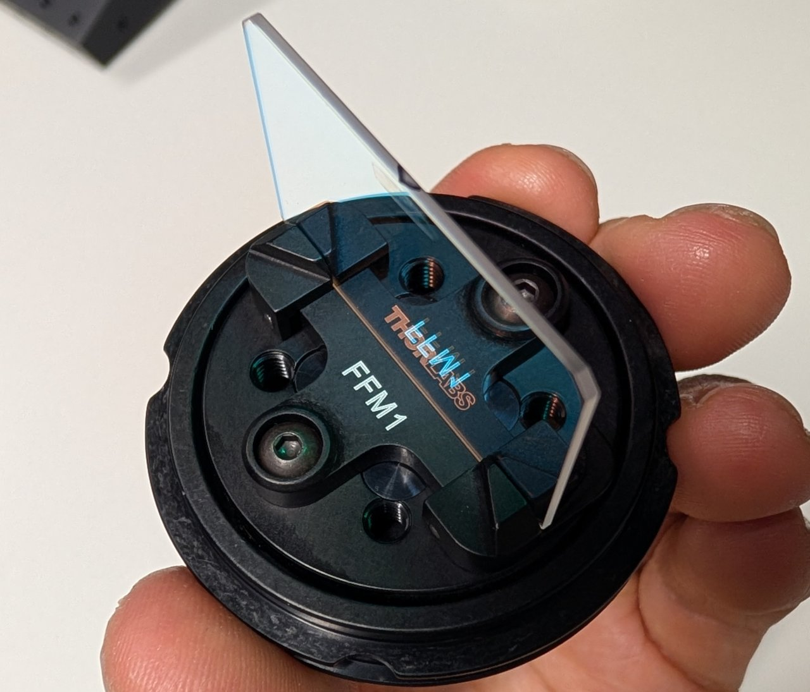
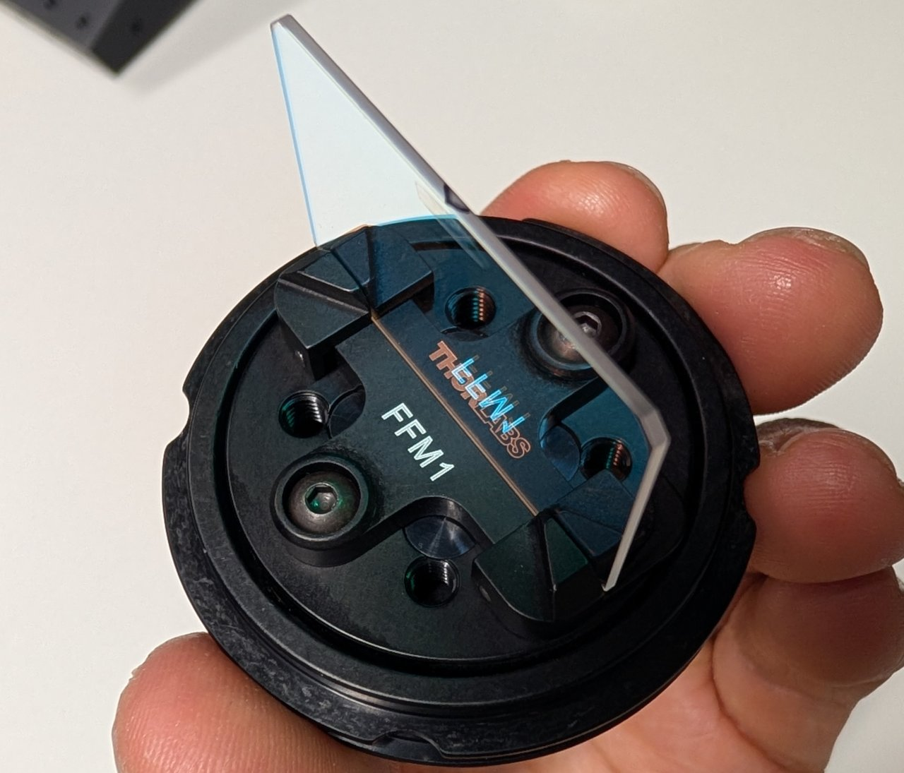
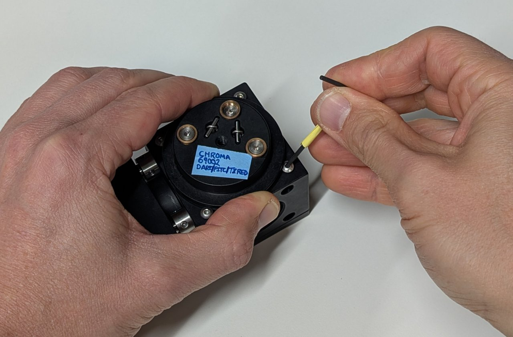
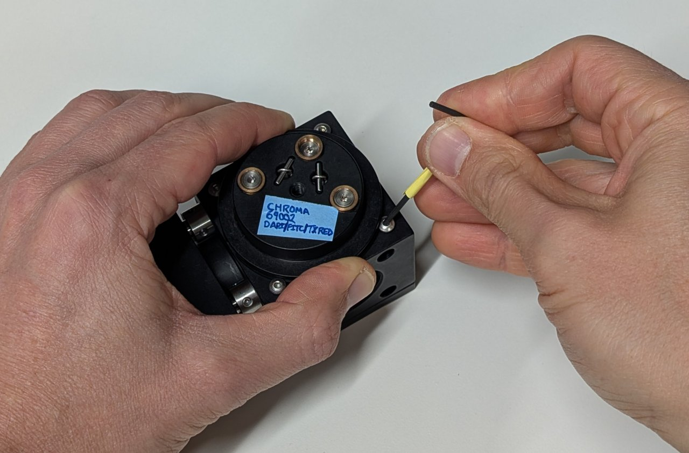
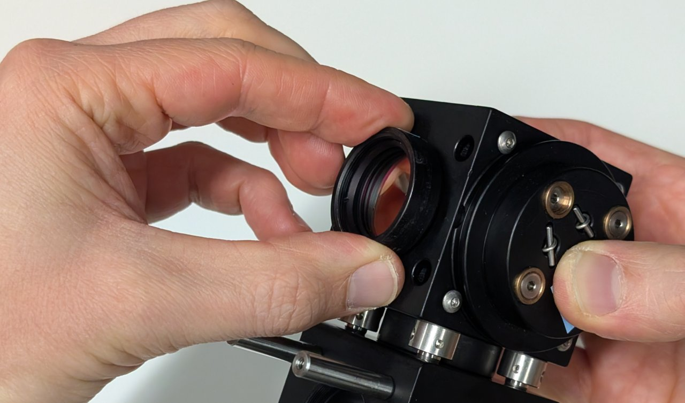
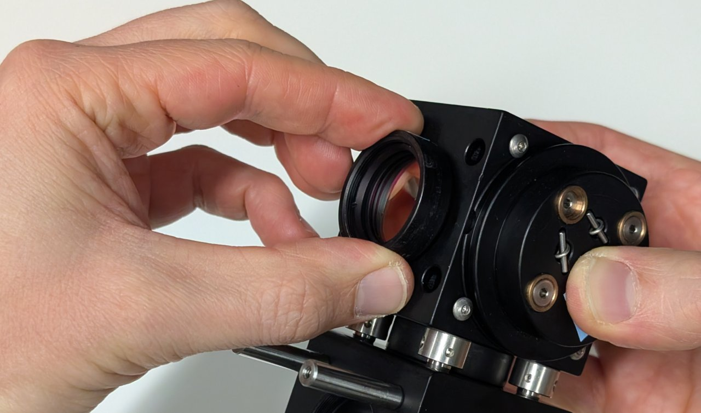

Construct the Microscope Emission Path
Parts List
Below is the parts list for this section of the basic training course. Note that some of the parts used in the course are now obsolete. In these cases the parts listed below are the closest current match to the obsolete parts.
| Part | Manf. Part No. | Quantity | URL |
|---|---|---|---|
| Ø1" Broadband Dielectric Mirror, 400 - 750 nm | BB1-E02 | 1 | https://www.thorlabs.com/thorproduct.cfm?partnumber=BB1-E02 |
| Right-Angle Kinematic Mirror Mount with Tapped Cage Rod Holes, 30 mm Cage System and SM1 Compatible, M4 and M6 Mounting Holes | KCB1/M | 1 | https://www.thorlabs.com/thorproduct.cfm?partnumber=KCB1/M |
| 30 mm Cage Cube, Ø6 mm Through Holes | C6WR | 1 | https://www.thorlabs.com/thorproduct.cfm?partnumber=C6WR |
| 30-mm-Cage-Compatible Rectangular Filter Mount | FFM1 | 1 | https://www.thorlabs.com/thorproduct.cfm?partnumber=FFM1 |
| Kinematic Cage Cube Platform for C4W/C6WR, Metric | B4C/M | 1 | https://www.thorlabs.com/thorproduct.cfm?partnumber=B4C/M |
| Coarse ±1 mm XY Slip Plate Positioner, 30 mm Cage Compatible, Metric | SPT1C/M | 1 | https://www.thorlabs.com/thorproduct.cfm?partnumber=SPT1C/M |


Instructions
0


 


 

 
